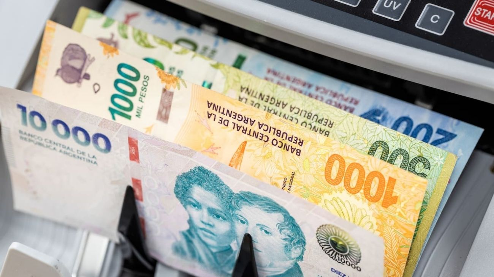

El "superpeso": la moneda argentina se apreció 12% en términos reales frente al dólar en lo que va de 2026
La mayor entrada de divisas por exportaciones récord y financiamiento externo empujó al peso a niveles de apreciación real inéditos, superando incluso al desempeño de otras monedas de la región.

El peso argentino acumula en 2026 una apreciación real del 12,2% frente al dólar, según un informe de Quantum Finanzas que tomó como referencia el período hasta el 22 de abril. En términos nominales, la suba fue del 5,1%, lo que da cuenta de que la ganancia de valor es genuina y no un mero efecto de la inflación local. El fenómeno, que ya se comienza a denominar "superpeso" en los mercados, es el resultado directo del fuerte ingreso de divisas que atraviesa la economía argentina desde la normalización cambiaria iniciada en abril de 2025.
Los motores detrás de esta apreciación son varios y se retroalimentan. El Banco Central compró más de US6.500 millones en el mercado de cambios en lo que va del año, manteniendo el tipo de cambio oficial lejos del techo de la banda cambiaria. Al mismo tiempo, la balanza comercial aportó un superávit superior a los US5.000 millones en el primer trimestre, traccionado por exportaciones que alcanzaron los US21.853 millones —un crecimiento del 16,8% interanual— mientras las importaciones cayeron 7,3% hasta los US16.345 millones. A esto se sumaron liquidaciones de deudas de empresas, emisiones de bonos provinciales y préstamos de bancos locales al sector privado, todo lo cual generó una oferta sostenida de dólares en el mercado.
En el plano regional, el peso argentino tuvo un desempeño destacado: superó la apreciación del peso colombiano (5,5%), del peso mexicano (2%) y del renminbi chino (1,4%). Solo el real brasileño lo aventajó, con una apreciación real del 7,3%. El contexto global también ayudó: el índice DXY, que mide el valor del dólar frente a una canasta de monedas internacionales, cayó 1,5% en abril, aunque frente al peso la baja fue de apenas el 0,4%, lo que indica que la fortaleza de la moneda local tiene lógica propia más allá de la debilidad global del billete verde.
Sin embargo, Quantum Finanzas advierte que un peso demasiado fuerte tiene costos. Una moneda apreciada encarece los insumos importados en dólares medidos en pesos, lo que puede comprimir los márgenes de las empresas exportadoras y afectar la competitividad de la industria nacional. Si los precios internacionales de los commodities que Argentina exporta continúan subiendo, el impacto puede ser manejable. Pero si los términos de intercambio se deterioran, la apreciación real del peso podría convertirse en un freno para las inversiones productivas que el país necesita consolidar.